株式会社 アイプランニング
Towa Edogawabashi building 8F
Yamabuki-cho 347
Shinjuku-ku Tokyo
Phone: 03-5225-1147
SQL Server 2008 Expressのインストール、設定、およびJavaからの利用方法についての資料を公開します。
DBサーバの開発環境作成や、導入検討を行う際には無償版を使うと便利です。
SQL Serverにも無償版が用意されています。
１．制限事項
Express(無料版)には、以下の制限があります。
・物理CPUの認識数が一つに制限されている。
・メモリ最大1GBまで
・DBサイズは最大4GBまで
十分な機能を有しているため、
小規模な商用サービスであれば、
Expressで運用しているところも少なくないようです。
２．SQL Server 2008 Expressのインストール
インストールには、以下のツールが必要になります。
事前にインストールを行ってください。
Windows
Installer 4.5 Redistributable
Microsoft
.NET Framework 3.5 Service Pack 1
Windows
Power Shell 1.0
※注意
MSXML6 SP2が入っている場合、アンインストールを行ってください。
（SQL Server Express
2008セットアップは、
SP無しのMSXML6のインストールを試みるため、失敗すると
SQL
Server自体のインストールを中止してしまうようです。）
SQL Server 2008 Express本体は以下からダウンロードします。
ツールをダウンロードする手間を省くため、ここではwith tools版をダウンロードします。
インストールツールを起動し、ダイアログにしたがってインストールを進めます。
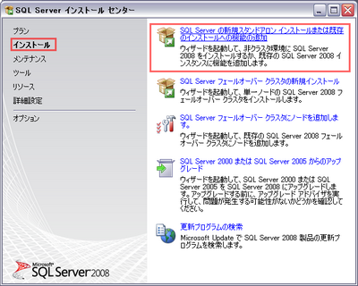
テスト用のユーザを作成したいので、認証モードを「混合モード(SQL Server認証とWindows認証)」にしてインストールをします。
インストールには１〜２時間ほどかかりました。
インストール後は管理ツールを使って作業を行います。
正常にインストールできていれば、
スタートメニュー＞Microsoft SQL
Server 2008＞SQL Server Management Studio
から起動できます。
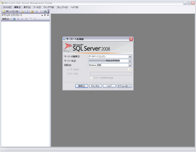
Windows認証でログインします。
３．ローカルサーバの設定
DBを使えるようにするためには、以下の３つの設定を行う必要があります。
(i)DBの作成
(ii)テーブルの作成
(iii)アカウントの追加
順に行っていきましょう。
(i)DBの作成
まず、新しいDBを作成します。
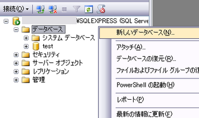
DBのプロパティが開きますので、
データベース名を入力します。
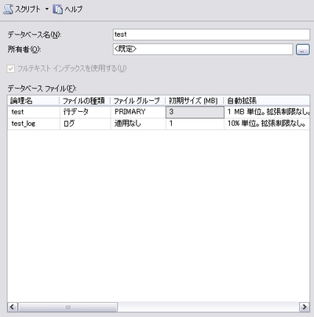
(ii)テーブルの作成
先ほど作成したDBツリーを開き、テーブルを作成します。
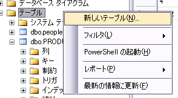
テーブルデザイナが開きます。
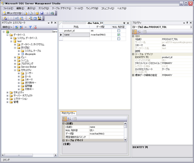
プロパティ内のテーブル名を登録し、
列名と型を決めていきます。
ここでは、PRODUCT_TBLというテーブル名にしています。
列名と型は以下の通りにしました。
| 列名 | 型名 |
| product_id | int |
| name | nvarchar(MAX)（Unicode可変長文字列） |
まず、商品名を管理するので、nameという列を作成します。
加えて、ユニークなIDを使いたいので、
product_idというintの列を作成しました。
プロパティのIDENTITY列にproduct_idを設定すると、
自動でインクリメント（＋１）してくれます。
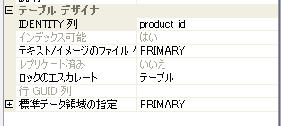
あとは、適当にテスト用のデータを作成しておきます。
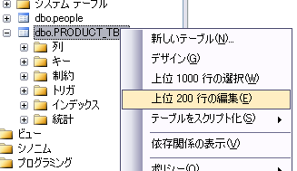
テーブルを右クリックして上位200行の編集を選択します。
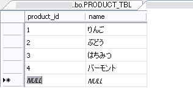
product_idはnullのままにして、nameを入れると、
product_idは自動的にインクリメントされます。
(iii)アカウントの作成
DBにアクセスできるアカウントを作成します。
DBのツリーから、セキュリティ＞ログインを右クリックし、
新しいログインを作成します。
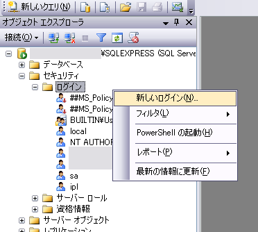
ログインのプロパティが開きます。
ログイン名とパスワードを入力します。種別はSQL Server認証にしてください。
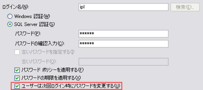
なお、当環境（Windows XP
sp2）では、
「ユーザーは次回ログイン時にパスワードを変更する」にチェックを入れていると、
アカウントの作成が出来ませんでした。
Windowsのバージョンによるもののようです。
次に、ユーザにDBを操作する権限を与えます。
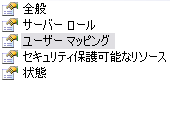
ログインのプロパティから、ユーザマッピングの項を選択します。
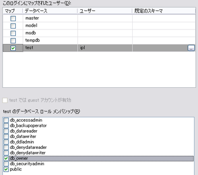
扱いたいDB（ここではtest）にチェックを入れます。
また、db_ownerにチェックを入れます。
これで、ユーザにDBを操作する権限を付与することが出来ました。
以後は、ここで作成したユーザをそれぞれのクライアントから使えばOKです。
４．Javaからアクセスする
TCP/IPからの接続に関しては、GigasMegas - SQL
Server 2008 Express TCP/IP接続設定を参考にしました。
接続は、以下のようなコードで確認することができます。
以上のコードを利用して、簡単な
住所管理アプリケーションをJava(Swing)で作成しました。
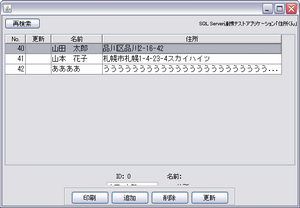
このような小規模なアプリケーションであれば、簡単に作れることが分かりました。
さすがにインストール容量こそ大きい(1〜2GB程度)ですが、
インストールの手間さえ乗り越えれば、使いやすい管理ツールを使うことが出来ます。
６．参考サイト
SQL Server 2008 Express をインストール: あるＳＥのつぶやき
アイプランニング技術情報
技術情報TOPページ
参考サイト
プログラマ募集中・・・
お客さまの立場に立ってモノが作れる判断力、企画力、コンサルティング能力を磨きたくはありませんか？プログラム能力は、プロジェクトを通じて自然と能力があがるようなシステムになっています。初心者プログラマであっても３年程度で、その能力は初心者だったとは思えないくらいのスキルとなっています。
これは、「最初は誰でも初心者だ」という教育方針があるため、また、多くの社員が入社して初めてプログラミングにふれたという経験があるために自分のつまづき体験や、成功体験を含めた教育がなされているからなのです。
このようにアイプランニングでは、社員１人ひとりの個性と人間性を重視し、スキルにあったマンツーマン教育であなたを一人前のエンジニアへと成長させていきます。 それは誠実なスタッフが集まっているからこそ、どんなお客様からも信頼される企業に成長できるから。私たちはそう考えています。
プログラマを目指して会社に入ったものの、思った通りの仕事をさせてもらえなかったと思っている人、教育システムが十分でなかったためにスキルが身に付いていないと思っている人も気軽にご応募ください。パソコンのスキルに自信のない方でも、マンツーマンの研修制度で一人前に成長できるフィールドを整えておりますので安心してご応募くださいね。
知識だけでなく本当の開発力が身につく環境でのシステム開発でみつかる『やりがい』はもちろん、プライベートでも今までになかった充実感が得られますよ。